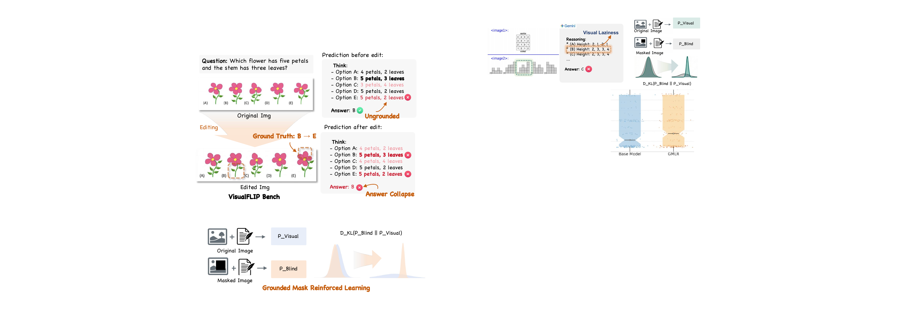
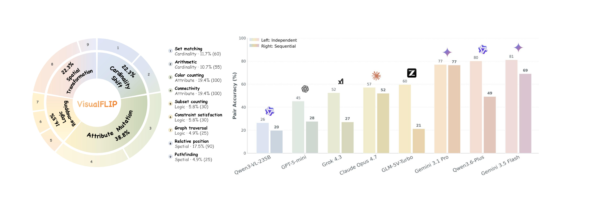
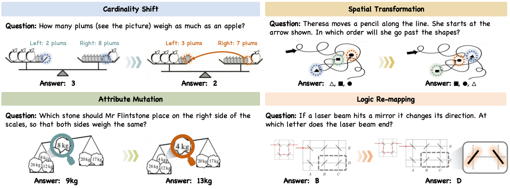

VisualFLIP Do Predictions Depend on Task-Critical Visual Evidence in Multimodal Reasoning?Do Predictions Depend on Task-Critical Visual Evidence in Multimodal Reasoning?
Imperial College London
VisualFLIP is a paired benchmark for testing whether multimodal predictions update when task-critical image evidence changes. Each item keeps the question fixed and changes the image evidence so the gold answer deterministically flips. VisualFLIP 是一个配对基准，用于测试多模态模型的预测是否会随任务关键图像证据而更新。每个样本保持问题不变，只改变图像证据，使标准答案确定性翻转。

The paired edit changes the correct option from B to E. The model's prediction remains B, so the pair is counted as an answer-update failure. 该配对编辑使正确选项从 B 变为 E；模型预测仍为 B，因此这一样本被计为答案更新失败。
A correct answer is not always a grounded one.答对，未必意味着有据。
Modern multimodal LLMs answer many visual-reasoning questions correctly. But single-image accuracy can hide answers that are not driven by the visual evidence — driven instead by language priors, memorized regularities, or whatever a confident reasoning chain happens to settle on. VisualFLIP turns this into a behavioral test. 现代多模态大模型能答对很多视觉推理题。但单图准确率会掩盖那些并非依赖视觉证据的答案——它们可能源自语言先验、记忆的规律，或一段听上去自洽的推理链恰好落到的位置。VisualFLIP 把这件事变成一个行为测试。
One pair = one question, two images. The second image makes a minimal task-critical edit that deterministically flips the gold answer. A prediction sensitive to the evidence should change between the two; a prediction that repeats the same answer despite the gold flipping collapses. The benchmark is behavioural — it measures whether predictions move with the evidence, not the internal mechanism behind any individual answer. 一对样本 = 一个问题，两张图。第二张图做一个对任务关键的最小化编辑，使标准答案确定性翻转。对证据敏感的预测应当随之改变；若两张图给出相同答案而标准答案已翻转，则发生坍塌。这是一个行为基准——它衡量预测是否随证据更新，并不主张任何关于内部机制的结论。

687 pairs across four categories and fourteen templates.687 对样本，4 个类别，14 个模板。

| Category类别 | Pairs样本数 | Templates模板 |
|---|---|---|
| Cardinality | 146 | hard_dense_count · hard_dense_5panel · stem_count_match · stem_sum_match |
| Attribute | 273 | color_connectivity · attr_dense_5panel · attr_dense_color_count |
| Spatial | 150 | layer_order · nested_containment · maze_path |
| Logic | 118 | logic_set_count · narrative_multi · logic_arrow_path |
| Total | 687 | 14 task templates |
140 of the 687 pairs additionally carry an irrelevant_image control arm to test answer stability under non-task-critical edits.
其中 140 对样本额外带 irrelevant_image 对照臂，用于检验答案在非任务关键编辑下的稳定性。
Main results across 24 MLLMs.24 个 MLLM 的主结果。
Table 1 uses the independent protocol (each image queried separately); Table 2 uses the sequential two-turn protocol (original then edited in one conversation; SeqCR measures original-answer persistence). Within each block, rows are ranked by Accp; bold marks the best value in a column. 表 1 为独立协议(两图分别独立询问);表 2 为序列两轮协议(同一对话先原图后编辑图,SeqCR 衡量原答案的惯性保持)。每个分块内按 Accp 排名;加粗为该列最优。
Table 1 — Independent evaluation表 1 — 独立评测
| # | Model模型 | Year年份 | Overall总体 | Cardinality | Attribute | Spatial | Logic | |||||
|---|---|---|---|---|---|---|---|---|---|---|---|---|
| Accp ↑ | CR ↓ | Accp | CR | Accp | CR | Accp | CR | Accp | CR | |||
| Closed-Source | ||||||||||||
| 1 | Gemini 3.5 Flash | 2026 | 81.2 | 7.3 | 84.9 | 7.1 | 90.5 | 4.5 | 70.7 | 11.4 | 68.6 | 9.5 |
| 2 | Qwen3.6-Plus | 2026 | 80.2 | 6.8 | 83.6 | 8.3 | 90.5 | 3.4 | 69.3 | 12.8 | 66.1 | 5.3 |
| 3 | GPT-5.5 | 2026 | 78.6 | 5.8 | 85.6 | 3.7 | 86.4 | 5.7 | 68.0 | 7.8 | 65.3 | 6.6 |
| 4 | Gemini 3.1 Pro | 2026 | 77.1 | 10.1 | 79.5 | 8.6 | 88.3 | 5.9 | 68.7 | 16.0 | 59.3 | 15.5 |
| 5 | Qwen3.5-Flash | 2026 | 72.1 | 7.8 | 74.0 | 6.4 | 87.2 | 3.8 | 52.7 | 17.3 | 59.3 | 7.9 |
| 6 | Seed 2.0 Mini | 2026 | 68.6 | 11.8 | 61.7 | 10.1 | 86.2 | 8.8 | 67.4 | 18.4 | 40.2 | 14.5 |
| 7 | GLM-5V-Turbo | 2026 | 59.7 | 10.2 | 41.1 | 13.3 | 78.7 | 5.5 | 53.6 | 17.3 | 46.6 | 11.1 |
| 8 | Claude Opus 4.7 | 2026 | 57.2 | 13.1 | 43.2 | 16.0 | 74.0 | 8.3 | 48.7 | 20.3 | 46.6 | 12.2 |
| 9 | Grok 4.3 | 2026 | 52.5 | 18.4 | 33.6 | 22.9 | 73.6 | 12.0 | 40.0 | 28.8 | 43.2 | 17.2 |
| 10 | GPT-5-mini | 2025 | 45.3 | 27.6 | 28.1 | 27.3 | 53.8 | 29.0 | 47.3 | 30.4 | 44.1 | 20.2 |
| 11 | Claude Opus 4.6 | 2026 | 28.4 | 23.2 | 19.2 | 25.0 | 38.1 | 17.3 | 30.7 | 29.1 | 14.4 | 32.7 |
| 12 | GPT-4o | 2024 | 23.3 | 50.6 | 13.0 | 57.1 | 20.9 | 61.7 | 40.0 | 34.7 | 20.3 | 34.9 |
| Open-Source | ||||||||||||
| 13 | MiMo-v2.5-310B | 2026 | 51.0 | 9.6 | 47.3 | 8.8 | 59.0 | 7.6 | 46.2 | 15.7 | 43.2 | 8.6 |
| 14 | Kimi K2.6-1T | 2026 | 41.6 | 2.9 | 48.6 | 2.9 | 39.9 | 1.7 | 41.6 | 2.4 | 35.6 | 5.6 |
| 15 | GLM-4.6V-106B | 2025 | 38.7 | 26.6 | 37.0 | 14.0 | 42.9 | 32.5 | 44.7 | 32.3 | 23.7 | 14.3 |
| 16 | Qwen3-VL-235B | 2025 | 26.5 | 47.7 | 26.7 | 47.2 | 19.0 | 60.1 | 38.7 | 39.7 | 28.0 | 24.2 |
| 17 | Qwen3-VL-32B | 2025 | 25.0 | 51.4 | 27.4 | 50.5 | 16.8 | 67.4 | 42.0 | 36.6 | 19.5 | 37.5 |
| 18 | Qwen3-VL-8B | 2025 | 17.6 | 52.7 | 15.8 | 55.1 | 11.7 | 61.5 | 28.0 | 43.2 | 20.3 | 48.5 |
| 19 | Qwen2.5-VL-7B | 2025 | 9.2 | 53.0 | 3.4 | 45.2 | 12.8 | 61.2 | 6.7 | 53.6 | 11.0 | 35.2 |
| Open-Source · Tool-Augmented | ||||||||||||
| 20 | CoF-7B | 2025 | 10.6 | 47.4 | 7.5 | 33.3 | 13.2 | 54.7 | 14.7 | 42.0 | 3.4 | 49.0 |
| 21 | DeepEyesV2-7B | 2026 | 9.2 | 42.6 | 7.5 | 34.4 | 8.4 | 50.7 | 11.3 | 41.5 | 10.2 | 32.8 |
| 22 | PixelReasoner-8B | 2025 | 7.9 | 51.6 | 4.8 | 38.1 | 12.1 | 55.1 | 5.3 | 56.2 | 5.1 | 50.0 |
| 23 | Mini-o3-7B | 2025 | 7.3 | 44.7 | 4.8 | 38.3 | 10.6 | 49.6 | 5.3 | 42.1 | 5.1 | 42.0 |
| 24 | DeepEyes-7B | 2025 | 7.1 | 53.0 | 4.1 | 42.1 | 8.1 | 64.6 | 8.0 | 45.6 | 7.6 | 44.3 |
Table 2 — Sequential evaluation表 2 — 序列评测
| # | Model模型 | Cardinality | Attribute | Spatial | Logic | Avg | |||||
|---|---|---|---|---|---|---|---|---|---|---|---|
| Accp | SeqCR | Accp | SeqCR | Accp | SeqCR | Accp | SeqCR | Accp ↑ | SeqCR ↓ | ||
| 1 | Gemini 3.1 Pro | 76.7 | 10.1 | 83.2 | 10.5 | 70.7 | 14.5 | 68.6 | 11.3 | 76.6 | 11.4 |
| 2 | Gemini 3.5 Flash | 80.8 | 8.1 | 66.3 | 22.8 | 65.3 | 9.0 | 66.1 | 6.8 | 69.1 | 14.2 |
| 3 | Claude Opus 4.7 | 34.9 | 22.5 | 64.5 | 23.4 | 50.0 | 18.6 | 47.5 | 19.8 | 52.1 | 21.6 |
| 4 | Qwen3.6-Plus | 43.2 | 51.1 | 53.1 | 41.3 | 49.3 | 32.5 | 48.3 | 22.1 | 49.3 | 39.2 |
| 5 | GPT-4o | 16.4 | 25.0 | 38.1 | 8.5 | 45.3 | 11.6 | 14.4 | 15.6 | 31.0 | 13.2 |
| 6 | GPT-5-mini | 11.6 | 64.8 | 31.9 | 47.4 | 40.7 | 37.1 | 21.2 | 51.5 | 27.7 | 48.4 |
| 7 | Grok 4.3 | 15.1 | 41.4 | 26.7 | 43.8 | 40.7 | 27.1 | 26.3 | 25.0 | 27.2 | 36.5 |
| 8 | GLM-5V-Turbo | 18.7 | 79.4 | 19.1 | 38.3 | 28.0 | 41.9 | 21.0 | 33.3 | 21.3 | 47.1 |
| 9 | Qwen3-VL-235B | 11.6 | 72.9 | 13.6 | 68.3 | 36.0 | 39.4 | 24.6 | 38.5 | 19.9 | 56.7 |
| 10 | GLM-4.6V | 14.5 | 57.1 | 13.8 | 63.4 | 21.3 | 55.1 | 10.4 | 47.1 | 15.0 | 57.5 |
Independent-mode source of truth: data/leaderboard.json. Sequential numbers are from the paper's Table 2.
独立模式数据来源:data/leaderboard.json;序列模式数值来自论文表 2。
Reproduce the evaluation.复现实验评测。
pip install -U huggingface_hub requests
git clone https://github.com/didizhu-judy/VisualFLIP && cd VisualFLIP
# 1) Pull the dataset (~530 MB)
python scripts/download_data.py --out ./visualflip_data
# 2) Run an OpenRouter eval (auto-bumps max-tokens for the two long templates)
export VISUALFLIP_DATA=./visualflip_data
export OPENROUTER_API_KEY=sk-or-...
python scripts/evaluate.py --model google/gemini-2.5-flash \
--out results/gemini25flash.json
# 3) Acc_p / CR / U-I-O decomposition + schema validation
python scripts/aggregate.py results/gemini25flash.json --expected-n 687
Weak models can skip the two long-context templates with --exclude-templates color_connectivity,maze_path.
弱模型可加 --exclude-templates color_connectivity,maze_path 跳过两个长上下文模板。
BibTeX
@article{zhu2026visualflip,
title = {VisualFLIP: Do Predictions Depend on Task-Critical
Visual Evidence in Multimodal Reasoning?},
author = {Zhu, Didi and Chen, Changrui and Zafeiriou, Stefanos and Deng, Jiankang},
year = {2026},
journal = {arXiv preprint},
note = {Code and data: https://github.com/didizhu-judy/VisualFLIP}
}
If you use the real-image pairs (source == "real_mathvision"), please also cite the MathVision benchmark (Wang et al., 2024).
如果使用了真实图像样本（source == "real_mathvision"），请同时引用 MathVision 基准（Wang et al., 2024）。